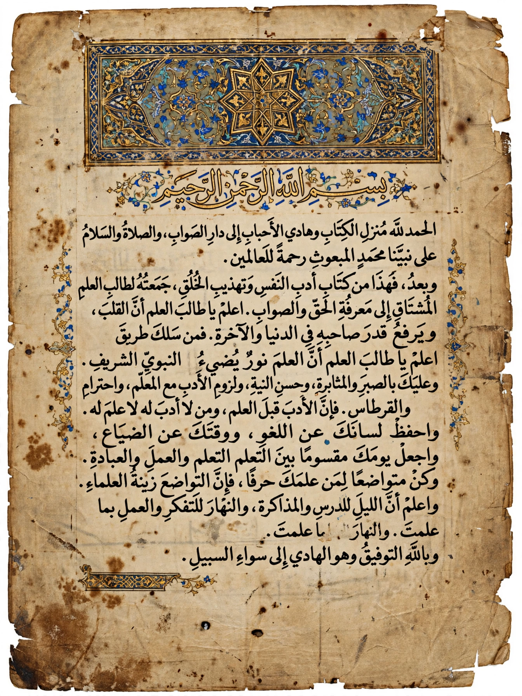

Ahmad ibn Fadlan
From Wikipedia, the free encyclopedia
| Ahmad ibn Fadlan | |
|---|---|
| Full name | Aḥmad ibn Faḍlān ibn al-ʿAbbās ibn Rāshid ibn Ḥammād |
| Active | 10th century |
| Known for | Account of the Volga Bulgars and the Rus' |
Ahmad ibn Fadlan (Arabic: أحمد بن فضلان) was a 10th-century Arab traveller and writer, a member of an embassy sent by the Abbasid caliph al-Muqtadir from Baghdad to the king of the Volga Bulgars in 921–922.
The journey
The embassy travelled from Baghdad through Bukhara and Khwarazm, across the steppes of the Oghuz Turks and Pechenegs, reaching the Volga Bulgar capital in May 922. Ibn Fadlan's mission was to deliver the caliph's gift and to instruct the Bulgars, newly converted to Islam, in Islamic law.

A manuscript page of the RisalaThe Risala
His account, known as the Risala ("The Report"), is a precious primary source for the peoples of the Eurasian steppe. It famously describes the Rus', Scandinavian traders on the Volga, including a detailed eyewitness description of a ship burial with human sacrifice — one of the most vivid surviving accounts of Viking Age funeral practice. The complete text survives in a manuscript discovered in Mashhad, Iran, in 1923.
In popular culture
Ibn Fadlan is the narrator-protagonist of Michael Crichton's novel Eaters of the Dead (1976), adapted as the film The 13th Warrior (1999).